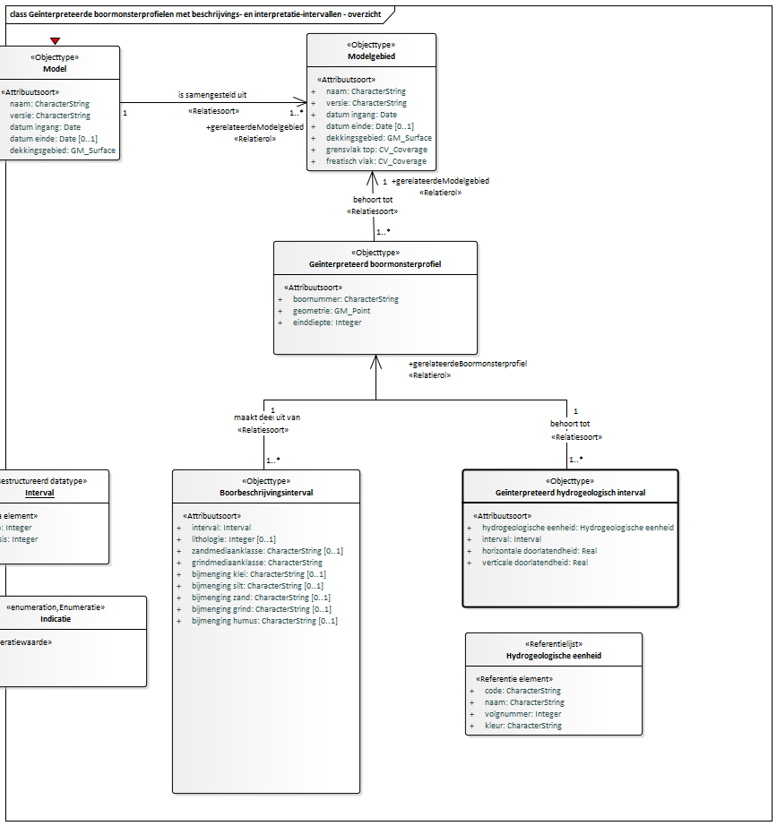

Creative Commons Attribution 4.0 International Public License (CC-BY)
Samenvatting
Deze catalogus beschrijft het ondergrondmodel REGIS II (Hydrogeologisch model).
Status van dit document
Deze paragraaf beschrijft de status van dit document ten tijde van publicatie. Het is mogelijk dat er actuelere versies van dit document bestaan. Een lijst van Geonovum publicaties en de laatste gepubliceerde versie van dit document zijn te vinden op https://www.geonovum.nl/geo-standaarden/alle-standaarden.
Dit is een definitief concept van de nieuwe versie van het informatiemodel. Wijzigingen naar aanleiding van consultaties zijn doorgevoerd.
Dit is de vastgestelde catalogus die hoort bij Bijlage II van de Regeling basisregistratie
ondergrond en verwijst naar artikel 11 van de Regeling basisregistratie ondergrond.
De andere delen zijn als niet normatief aangeduid en voorzien van een grijze achtergrond.
1. Inleiding
1.1 Doel en doelgroep
In de basisregistratie ondergrond (BRO) wordt een aantal typen gegevens geregistreerd, de registratieobjecten.
Een catalogus is de gegevensdefinitie van een registratieobject en beschrijft welke gegevens van het object in de BRO zijn opgeslagen.
Het document is bedoeld voor alle gebruikers van de BRO en moet duidelijk maken welke gegevens er precies in het systeem zitten.
Aan aanleverende partijen moet het vertellen welke gegevens in de basisregistratie ondergrond moeten komen en aan welke eisen die moeten
voldoen, en aan afnemende partijen welke gegevens zij in de basisregistratie ondergrond mogen verwachten.
Het document is voor een breed publiek bedoeld en de informatie moet naast precies ook begrijpelijk zijn.
1.2 Totstandkoming
Een catalogus is het resultaat van een proces van standaardisatie dat geruime tijd in beslag kan nemen. De standaardisatie is een open proces waarin de belanghebbende partijen actief betrokken worden. Het eindresultaat wordt door de wetgever vastgesteld in een ministeriële regeling.
In bepaalde gevallen is de verscheidenheid aan gegevens van een object zo groot, dat er eerst deelverzamelingen worden gedefinieerd. Het standaardisatieproces wordt dan per deelverzameling doorlopen. De deelverzamelingen worden zo gekozen dat de gegevens die in de bijbehorende catalogus worden beschreven, direct na vaststelling aan de BRO kunnen worden aangeleverd. Wanneer er deelverzamelingen worden onderscheiden, komt de catalogus van het registratieobject dus gefaseerd tot stand. Omdat inzichten in de loop van de tijd kunnen wijzigen kan het aan het eind van het hele proces nodig blijken revisies door te voeren om ongewenste verschillen tussen deelverzamelingen weg te nemen.
1.3 Beheer
Een vastgestelde catalogus (zoals op wetten.nl gepubliceerd) wordt met het daarbij horende deel van het systeem van de basisregistratie ondergrond in gebruik genomen. De eerste formeel vastgestelde catalogus (zoals op wetten.nl gepubliceerd) krijgt het versienummer 1.0. Verwacht mag worden dat er na enige tijd behoefte gaat ontstaan aan gegevens die nog niet in de catalogus zijn opgenomen.
De beheerder hanteert drie typen versies voor een wijziging van een standaard. Bijvoorbeeld: versie 2.1.0 (=X.Y.Z):
X-wijzigingen Deze wijzigingen veranderen de structuur van de standaard. Hierdoor zijn X-wijzigingen niet backwards compatible.
Frequentie: maximaal 1 keer per 2 jaar.
Y-wijzigingen Dit zijn wijzigingen die niet de structuur veranderen. Dit kunnen bijvoorbeeld updates zijn of inhoudelijke aanpassingen aan objecten, attributen of waardelijsten of de reikwijdte van de standaard. Deze wijzigingen zijn backwards compatible.
Frequentie: maximaal 1 keer per jaar.
Z-wijzigingen Dit zijn in feite oplossingen van fouten of verbeteringen van technische aard. Deze wijzigingen zijn backwards compatible.
Frequentie: maximaal 2 keer per jaar.
In een jaar waarin een X-wijziging plaats vindt zullen er op hetzelfde registratieobject geen y-wijzigingen plaatsvinden. Als er een X- of een Y-wijziging in een jaar aan de orde is, wordt er geen z-wijziging gepland.
De versie van de catalogus met inleiding (zoals hier gepubliceerd) volgt voor de normatieve stukken volledig de versie op wetten.nl. Wijzigingen aan niet normatieve teksten in dit document vallen altijd onder Z-wijzigingen en zullen maximaal 2 keer per jaar plaatsvinden.
REGIS II is een driedimensionaal hydrogeologisch model van de laagopbouw en hydraulische eigenschappen van de matig diepe ondergrond van Nederland tot een gemiddelde diepte van ongeveer 500 meter onder NAP, met een maximum diepte van 1200 m onder NAP. REGIS II is gebaseerd op de interpretaties van de boormonsterbeschrijvingen en het lagenmodel van DGM. In REGIS II zijn de lithostratigrafische eenheden van DGM verder onderverdeeld in hydrogeologische eenheden.
1.4 Leeswijzer
Hoofdstuk 1 geeft het doel en de doelgroep van een catalogus.
Hoofdstuk 2 behandelt enkele algemene aspecten van het BRO-systeem en begrippen van algemene aard.
Hoofdstuk 3 plaatst het object in de gegevenssystematiek van de basisregistratie ondergrond en vertelt wat de benadering is geweest bij het opstellen van de gegevensdefinitie.
Hoofdstuk 4 vertelt hoe de catalogus is opgebouwd en welke aspecten van de gegevens daarin worden beschreven.
2. Algemene kenmerken en begrippen
2.1 Opzet van de landelijke voorziening
De landelijke voorziening van de basisregistratie ondergrond is een systeem dat een schakel vormt in een informatieketen. Aan het begin van de keten staan bestuursorganen die opdracht geven tot de productie van gegevens, of zelf gegevens produceren. Die bestuursorganen worden bronhouders genoemd. De geproduceerde gegevens worden door een dataleverancier geleverd aan de beheerder van het systeem, de registerbeheerder. De bronhouder is verantwoordelijk voor de levering van gegevens. Hij kan besluiten zelf dataleverancier te zijn of andere partijen een machtiging voor levering te verlenen. De beheerder van de landelijke voorziening van de BRO registreert de aangeleverde gegevens en levert ze voor (her)gebruik door aan allerlei afnemers.
De opzet van het systeem moet begrepen worden vanuit de verantwoordelijkheden die in de keten zijn belegd. De aangeleverde gegevens vallen onder de verantwoordelijkheid van de bronhouder en de registerbeheerder mag die gegevens niet veranderen. De registerbeheerder moet echter wel gegevens toevoegen om het systeem te kunnen beheren en hij kan gegevens toevoegen om de afnemers goed van dienst te kunnen zijn.
Bij wet is geregeld dat de basisregistratie ondergrond zo wordt opgezet dat er onderscheid bestaat tussen de gegevens die aan de registerbeheerder zijn aangeleverd en de gegevens die de registerbeheerder aan de afnemers verstrekt. Het systeem valt uiteen in twee grote deelsystemen, het register brondocumenten ondergrond en de registratie
ondergrond (Figuur 1).
Een geheel van gegevens dat door of onder verantwoordelijkheid van een bronhouder wordt aangeleverd, wordt een brondocument genoemd. De brondocumenten worden in het register brondocumenten ondergrond opgeslagen. De gegevens uit de brondocumenten worden samen met de gegevens die de registerbeheerder toevoegt in de registratie ondergrond vastgelegd. De registratie ondergrond is het deelsysteem dat gebruikt wordt voor uitgifte.
Figuur 1De twee grote deelsystemen van de landelijke voorziening van de BRO.
Met deze opzet verkrijgt het systeem de nodige flexibiliteit. Zo kan een object in de registratie ondergrond gegevens bevatten die uit meer dan één brondocument afkomstig zijn en bij uitgifte kunnen gegevens van verschillende objecten met elkaar gecombineerd worden. Ook is het mogelijk met het brondocument gegevens op te slaan die alleen voor de bronhouder en de aanleverende partij van belang zijn.
De catalogus dekt alle gegevens die opgenomen zijn in de registratie ondergrond. Verreweg de meeste gegevens komen uit de brondocumenten die de dataleverancier aanlevert en een paar gegevens komen voort uit de overdracht van een brondocument aan de registerbeheerder. Aan de aangeleverde gegevens worden enkele gegevens door de registerbeheerder toegevoegd. Als een gegeven is toegevoegd door de BRO wordt dat in de beschrijving expliciet vermeld.
Alle gegevens in de registratie ondergrond worden uitgegeven, maar niet alle afnemers kunnen alle gegevens geleverd krijgen. De gegevens die niet aan alle afnemers worden uitgeleverd zijn de gegevens die alleen nodig zijn in de communicatie tussen de registerbeheerder enerzijds en de dataleveranciers en bronhouders anderzijds.
2.2 Registratieobject
Het registratieobject is dé eenheid in de data-architectuur van de basisregistratie ondergrond. Voor de registerbeheerder is het de elementaire bouwsteen van het systeem dat hij moet beheren.
Een registratieobject verwijst naar een eenheid van informatie die onder de verantwoordelijkheid van één bronhouder valt en die met een bepaald doel is of wordt gemaakt. Het is in directe of indirecte zin gedefinieerd in de ruimte en dat wil zeggen dat een registratieobject een plaats op het aardoppervlak heeft of dat het gekoppeld is aan een ander type registratieobject met een plaats op het aardoppervlak.
Een registratieobject is niet alleen in de ruimte maar ook in de tijd gedefinieerd. Het leven van een registratieobject begint op het moment dat de gegevens zijn geregistreerd en dat is zo kort mogelijk nadat de gegevens zijn geproduceerd. De levensduur van een registratieobject, en de veranderlijkheid van de gegevens verschilt van object tot object. Een grondwatermonitoringput kan tientallen jaren gebruikt worden voor het meten van grondwaterstanden en in de periode kunnen er nieuwe gegevens ontstaan. Dat betekent dat de gegevens van de put in de registratie ondergrond gedurende zijn hele levensduur bijgewerkt moeten kunnen worden. Aan de andere kant van het spectrum staan de objecten waarvan alle gegevens in een keer worden vastgelegd. Geotechnisch sondeeronderzoek is daar een voorbeeld van. Sondeeronderzoek is eenmalig onderzoek en het resultaat ervan kan al na een of enkele dagen aan de bronhouder worden overhandigd.
2.3 Registratiedomein
Registratieobjecten worden in de basisregistratie ondergrond gegroepeerd in domeinen. Vooralsnog worden zes domeinen onderscheiden:
bodem- en grondonderzoek
bodemkwaliteit
grondwatermonitoring
grondwatergebruik
mijnbouwwet
modellen.
De domeinen zijn vanuit het oogpunt van beheer van belang voor de ordening van het systeem. Daarnaast zijn zij nuttig in de communicatie met de partijen die bij de realisatie van het systeem betrokken zijn.
2.4 Kwaliteitsregime
In de basisregistratie ondergrond worden niet alleen gegevens geregistreerd die dateren van na de datum waarop de wet van kracht is geworden. Ook oudere gegevens zullen in de basisregistratie ondergrond worden opgenomen. De noodzaak daartoe ligt in de wet verankerd. Die schrijft voor dat de gegevens uit de eerder bestaande systemen DINO en BIS zo veel mogelijk naar de BRO moeten worden overgezet. Verder staat de wet toe dat bronhouders tot vijf jaar na de inwerkingtreding van de wet historische gegevens ter registratie mogen aanbieden.
Historische gegevens kunnen niet altijd voldoen aan de strikte regels die de BRO stelt. Zo kan het voorkomen dat voor gegevens die volgens de strikte regels van de BRO verplicht zijn, geen waarde bekend is. Om de verwerking van de twee categorieën gegevens naast elkaar mogelijk te maken, worden twee kwaliteitsregimes gehanteerd. Voor de aanlevering van gegevens volgens de strikte regels geldt het IMBRO-regime. Bij de aanlevering van historische gegevens wordt geaccepteerd dat een aantal formeel verplichte gegevens geen waarde heeft. Voor deze gegevens wordt het IMBRO/A-regime gehanteerd en dat kent dus minder strikte regels.
De introductie van de twee kwaliteitsregimes geeft de bronhouder gedurende een bepaalde periode een zekere mate van vrijheid. Het kan bijvoorbeeld praktisch blijken het IMBRO/A-regime te hanteren voor gegevens die weliswaar pas na de datum waarop de wet in werking is getreden zijn geproduceerd maar die voortkomen uit opdrachten die al voor die datum zijn gegeven. Ook kan het voorkomen dat historische gegevens wel aan alle strikte voorwaarden voldoen en dan is het wenselijk de gegevens onder IMBRO-regime aan te leveren.
De periode waarin de bronhouders die vrijheid hebben wordt de transitieperiode genoemd. Over de duur van de transitieperiode zijn nog geen afspraken gemaakt. Na afloop van de transitieperiode kan alleen onder het strikte IMBRO-regime worden aangeleverd.
2.5 Formele en materiële geschiedenis
De basisregistratie ondergrond maakt deel uit van een stelsel van basisregistraties. Binnen het stelsel maakt men onderscheid tussen de materiële geschiedenis en de formele geschiedenis van een object.
Het begrip materiële geschiedenis wordt gebruikt om de veranderingen van eigenschappen van een object in de werkelijkheid aan te duiden. De materiële geschiedenis van een object wordt, voor zover relevant, in de registratie ondergrond vastgelegd. Niet alle registratieobjecten hebben een materiële geschiedenis, alleen de objecten met een levensduur, zoals de grondwatermonitoringput.
Het begrip formele geschiedenis wordt gebruikt voor de veranderingen van eigenschappen van een object in de registratie zelf. De meeste van die veranderingen gaan terug op een verandering van eigenschappen in de werkelijkheid, en de formele geschiedenis geeft aan wanneer de veranderingen in het systeem geregistreerd zijn. De formele geschiedenis kent ook gebeurtenissen die niet het gevolg zijn van een verandering in de werkelijke eigenschappen van een object. Die gebeurtenissen hebben betrekking op correcties. Het kan gebeuren dat een bronhouder erachter komt dat er een onjuiste waarde was geregistreerd en dan zorgt hij ervoor dat die verbeterd wordt. De registratie van de verbetering is een formele gebeurtenis.
Alle registratieobjecten hebben een formele geschiedenis en die wordt in de registratie ondergrond globaal vastgelegd in de registratiegeschiedenis van het object. Globaal wil zeggen dat de registratie ondergrond alleen een overzicht van de formele geschiedenis geeft. Voor de details moet het register brondocumenten ondergrond worden geraadpleegd.
Bij correctie wordt het betreffende gegeven in de registratie ondergrond overschreven en is de oude waarde van het gegeven niet meer direct beschikbaar voor de afnemers.
Zou een afnemer toch willen weten wat de eerdere foute waarde was, dan moet hij het register brondocumenten ondergrond raadplegen.
2.6 Coördinaten en referentiestelsels
De registratieobjecten van de basisregistratie ondergrond zijn gedefinieerd in de ruimte en dat wil zeggen dat een object zelf een plaats op het aardoppervlak, een locatie, heeft, of dat het gekoppeld is aan een ander type registratieobject met een locatie. Afhankelijk van het type registratieobject, wordt de locatie geregistreerd als een punt, een lijn of een vlak.
De locatie is de horizontale positie van een object. Voor bepaalde objecten is het voldoende dat alleen die horizontale positie wordt vastgelegd, maar voor veel objecten is ook de verticale positie van belang.
Posities worden vastgelegd in coördinaten en die zijn gedefinieerd in een bepaald referentiestelsel.
Er zijn verschillende typen referentiestelsels. Zo spreekt men van horizontale referentiestelsels (2D), verticale referentiestelsels (1D), gecombineerde referentiestelsels (2D, 1D) en werkelijke 3D referentiestelsels. In Nederland worden de horizontale en de verticale component van een positie in een afzonderlijk stelsel uitgedrukt. Het is vandaag de dag mogelijk met gps een positie in een 3D-referentiestelsel vast te leggen, maar de wens over te stappen op het gebruik van 3D is nog door geen van de partijen die betrokken zijn bij de basisregistratie ondergrond naar voren gebracht.
2.6.1 Referentiestelsels voor de horizontale positie
In Nederland zijn traditioneel verschillende referentiestelsels voor de horizontale positie in gebruik. In 2009, bij de eerste voorbereidingen voor de totstandkoming van de basisregistratie ondergrond, is al vastgesteld dat de verscheidenheid aan referentiestelsels de basisregistratie ondergrond voor problemen stelt omdat de registratie dan niet gemakkelijk op een eenduidige manier bevraagd kan worden. In de registratie ondergrond worden namelijk zowel gegevens met een locatie op land als gegevens met een locatie op zee geregistreerd. In de toenmalige praktijk werden op land en op zee verschillende stelsels gebruikt. Op land werd RD gebruikt en op zee waren verschillende stelsels in gebruik, waarvan WGS84 de belangrijkste was.
In 2009 was ook al bekend dat de Europese kaderrichtlijn INSPIRE de lidstaten vraagt de gegevens in Europa in één referentiestelsel uit te gaan wisselen, te weten in ETRS89. Met dat in gedachten, is het besluit genomen het BRO-systeem zo in te richten dat de registratie bevraagd gaat worden in ETRS89.
Het besluit wordt ondersteund door ontwikkelingen in Nederland. Sinds 2013 wordt er door de drie belangrijkste autoriteiten in Nederland op het gebied van referentiestelsels, het Kadaster, de Dienst der Hydrografie en Rijkswaterstaat, gewerkt aan de totstandkoming van nieuwe afspraken. Die afspraken moeten in lijn zijn met Europese afspraken en leiden tot heldere en eenduidige transformatieprocedures tussen referentiestelsels. Concreet betekent dit dat in Nederland op termijn het ETRS89-stelsel als standaard zal worden gehanteerd voor het uitwisselen van geo-informatie.
Het besluit betekent niet dat de gegevens ook in ETRS89 aangeleverd moeten worden. De basisregistratie ondergrond voorziet een periode van transitie waarin de aanleverende partijen zelf bepalen wanneer zij overstappen op ETRS89. Die periode zal naar verwachting jaren duren. Om de transitie te ondersteunen hanteert de basisregistratie ondergrond de volgende spelregels:
Gegevens mogen in een beperkt aantal referentiestelsels worden aangeleverd (RD, WGS84 en ETRS89).
Voor locaties op land wordt alleen RD of ETRS89 toegestaan.
Voor locaties op zee wordt alleen WGS84 of ETRS89 toegestaan.
De aangeleverde coördinaten worden in de registratie opgeslagen.
De aangeleverde coördinaten worden door de basisregistratie ondergrond getransformeerd naar
het ETRS89 referentiestelsel.
De getransformeerde coördinaten worden naast de aangeleverde coördinaten opgeslagen.
Bij de getransformeerde coördinaten wordt ook een identificatie van de gebruikte transformatiemethode opgeslagen.
Als de coördinaten in ETRS89 zijn aangeleverd, dan staat bij aangeleverde en getransformeerde positie dezelfde
informatie. Voor de locatie worden de getransformeerde coördinaten en de aangeleverde coördinaten beide
aan de afnemers verstrekt.
2.6.2 Referentiestelsels voor de verticale positie
In Nederland zijn voor verticale posities op land en zee verschillende referentiestelsels in gebruik. Op land wordt NAP gebruikt. Op zee is het in de voor de BRO relevante werkvelden gebruikelijk posities uit te drukken t.o.v. het gemiddeld zeeniveau (MSL, Mean Sea Level), maar posities t.o.v. LAT komen ook voor (Lowest Astronomical Tide). Dit laatstgenoemde stelsel wordt in de kaderrichtlijn INSPIRE genoemd als het stelsel van voorkeur voor het uitdrukken van verticale posities op zee. De basisregistratie ondergrond staat daarom op zee het gebruik van LAT naast MSL toe. Aangeleverde verticale posities worden door de BRO niet getransformeerd.
2.7 Gegevens op land en op zee
De basisregistratie ondergrond bevat gegevens over de ondergrond van Nederland en zijn zgn. Exclusieve Economische Zone (EEZ). De EEZ is het gebied op de Noordzee waar Nederland economische rechten heeft. Voor de referentiestelsels die bij aanlevering worden toegestaan, is het van belang te weten of de locatie van een object op zee of op land ligt.
Als scheidingslijn tussen land en zee wordt in de basisregistratie ondergrond de UNCLOS-basislijn gehanteerd. Het beheer van de basislijn valt onder de verantwoordelijkheid van de Dienst der Hydrografie van het ministerie van Defensie. Deze dienst voert die taak uit op basis van het Zeerechtverdrag van de Verenigde Naties uit 1982, dat in het Engels de United Nations Convention on the Law of the Sea (UNCLOS) heet.
De basislijn is opgebouwd uit de nulmeterdieptelijn zoals weergegeven op de zeekaarten en enkele rechte basislijnen die onder meer de monding van de Westerschelde en de wateren tussen de Waddeneilanden afsluiten.
De grens tussen land en zee is veranderlijk. De Dienst der Hydrografie stelt de grens opnieuw vast wanneer daartoe voldoende aanleiding is. De BRO hanteert bij inname de meest recente versie van de UNCLOS-basislijn en controleert daarmee of de juiste referentiestelsels gebruikt worden.
Tussen het moment waarop de locatie van een object wordt bepaald en het moment waarop het gegeven in de basisregistratie ondergrond wordt vastgelegd verloopt enige tijd. In die periode kan de positie van de UNCLOS-basislijn opnieuw zijn vastgesteld, en dan ontstaat er een discrepantie die bij het aanleveren van gegevens tot problemen kan leiden. Wanneer een dergelijk probleem zich voordoet, wordt de dataleverancier gevraagd contact op te nemen met de registratiebeheerder om gezamenlijk tot een oplossing te komen.
Een soortgelijk probleem doet zich voor met betrekking tot de begrenzing van Nederland, met name van het Nederlands territoir. De grenzen van Nederland worden ieder jaar op 1 januari vastgesteld door het Kadaster en vastgelegd in de basisregistratie kadaster. De BRO controleert bij inname of een object in het gebied ligt dat Nederland en zijn Exclusieve Economische Zone omvat, en hanteert daarbij de actuele grenzen. Ook bij problemen die te herleiden zijn tot een verandering in de begrenzing van Nederland, wordt de dataleverancier gevraagd contact op te nemen met de registratiebeheerder om gezamenlijk tot een oplossing te komen.
Binnen het domein Mijnbouwwet wordt de scheidingslijn tussen land en zee niet bepaald door de UNCLOS-basislijn, maar door een over zee lopende lijn die is vastgelegd in een bijlage bij de Mijnbouwwet. In de registratie ondergrond wordt deze lijn aangeduid als mijnbouwgrens. Voor de referentiestelsels die bij aanlevering worden toegestaan, is het binnen het domein Mijnbouwwet van belang te weten of de locatie van een object aan landzijde of aan zeezijde van de mijnbouwgrens ligt. Waar in voorgaande paragrafen ‘op land’ en ‘op zee’ is genoemd, houdt dat binnen het domein Mijnbouwwet in: aan landzijde respectievelijk aan zeezijde van de mijnbouwgrens.
2.8 Nauwkeurigheid van meetwaarden
Voor zinvol gebruik van gegevens met een gemeten, berekende of anderszins bepaalde waarde is het noodzakelijk dat de nauwkeurigheid van die gegevens bekend is.
Het begrip nauwkeurigheid laat zich in deze context het best omschrijven als de juistheid van een gemeten of berekende waarde. In de meeste processen waarin de waarde van een gegeven wordt bepaald, kan de afwijking van de daadwerkelijke waarde slechts via een kalibratie- of statistisch proces worden verkregen. Het resultaat omvat dan niet alleen een van de mogelijke realisaties van een meetwaarde maar ook informatie over de mogelijke spreiding van de meetwaarden.
De basisregistratie ondergrond gaat ervan uit dat de producenten van gegevens de metingen en berekeningen uitvoeren binnen een stelsel van afspraken dat binnen het desbetreffende werkveld is vastgelegd. Uitgangspunt is dat ook de eisen waaraan de gegevens op het gebied van nauwkeurigheid moeten voldoen in afspraken zijn vastgelegd. Dat kunnen praktische werkafspraken zijn, maar ook afspraken die vertaald zijn naar ISO- en NEN-normen. In de catalogus wordt in beginsel verwezen naar die normen. Waar deze normen niet voorzien in afspraken over de nauwkeurigheid, stelt de basisregistratie ondergrond hieraan specifieke eisen. Deze zijn dan vermeld in de catalogus.
2.9 Authentiek gegeven
In de wet is een aantal gegevens expliciet als authentiek aangeduid. Dit wordt in de catalogus nader uitgewerkt; verreweg de meeste gegevens zijn authentiek.
Met de aanduiding authentiek wordt, zoals geformuleerd in de memorie van toelichting op de wet, tot uitdrukking gebracht dat:
Het gegeven in samenhang met andere gegevens door een groot aantal bestuursorganen in verschillende processen wordt gebruikt en derhalve bestemd is voor informatie-uitwisseling tussen bestuursorganen;
de verantwoordelijkheid voor betrouwbaarheid van het gegeven eenduidig geregeld is;
het gegeven onderworpen is aan intern en extern kwaliteitsonderzoek, en
het gegeven zich leent voor verplicht gebruik door bestuursorganen en eenmalige verstrekking door burgers en bedrijven aan de overheid.
In de praktijk mag een gebruiker van de gegevens ervan uitgaan dat alle gegevens correct zijn. De catalogus moet de gebruiker alle informatie geven die voor een goed begrip daarvan nodig is.
Heeft een gebruiker echter gerede twijfel over de juistheid van een authentiek gegeven dan wordt verwacht dat hij de registerbeheerder daarvan op de hoogte brengt. Bestuursorganen zijn, bij gerede twijfel over de juistheid van een authentiek gegeven (of het ontbreken ervan), zelfs verplicht daarvan melding te maken.
Voor alle gegevens is aangegeven of ze authentiek zijn. Ook is voor alle gegevens aangegeven of ze aanwezig moeten zijn en een waarde moeten hebben. Dat laat zien dat er gegevens kunnen zijn die authentiek zijn maar geen waarde hoeven te hebben. Juist omdat er verplichtingen gelden t.a.v. authentieke gegevens, vraagt dit om een korte toelichting.
Wanneer een authentiek gegeven geen waarde heeft moet de gebruiker ervan uitgaan dat het gegeven niet is geproduceerd. Dat geval kan zich uiteraard alleen voordoen wanneer er vrijheid van beslissen bestaat bij de bronhouder of de producent.
Voor de duidelijkheid, als er wel een waarde is dan moet die ook in de BRO worden opgenomen. Bij gerede twijfel over het ontbreken van een waarde, moet een bestuursorgaan dat melden.
3. De inhoud van de catalogus
De gegevensdefinitie
De gegevensdefinitie vormt het hart van de catalogus en geeft een beschrijving van alle gegevens van het registratieobject. Eerst wordt de definitie van het registratieobject gegeven inclusief de plaatjes van het zgn. domeinmodel, en vervolgens de definities van de entiteiten waaruit het object is opgebouwd met de eigenschappen van die entiteiten, de attributen. De entiteiten worden op volgorde van de nummers in het domeinmodel behandeld. De volgende aspecten van de gegevens worden vastgelegd:
De Nederlandse naam van het gegeven.
Of het gegeven van het type entiteit of het type attribuut is, met in het laatste geval van welke entiteit het een attribuut is.
Eventueel de herkomst van het gegeven, in het uitzonderlijke geval de herkomst anders is dan de BRO.
De definitie van het gegeven.
Eventueel de herkomst van de definitie, in het uitzonderlijke geval de definitie een andere herkomst heeft dan de BRO.
De kardinaliteit van een attribuut, en dat geeft aan hoe vaak het attribuut voorkomt.
De aanduiding of een attribuut al dan niet authentiek is (juridische status).
De naam van het domein voor de waarden van het attribuut, met afhankelijk van het type domein nadere informatie over de waarden.
Eventueel de naam van het domein van het attribuut voor IMBRO/A, wanneer het uitzonderlijke geval zich voordoet dat er voor IMBRO/A een ander domein geldt dan voor IMBRO.
Eventueel de regels die in aanvulling op de kardinaliteit en de bepalingen van het domein gelden en door de basisregistratie ondergrond in controles zijn opgenomen, bijvoorbeeld om de consistentie van de inhoud van een brondocument vast te stellen.
Eventueel de regels die voor IMBRO/A gelden, wanneer het uitzonderlijke geval zich voordoet dat er voor IMBRO/A aanvullende regels gelden.
Eventueel de aanduiding dat de waarde van het attribuut mag ontbreken, wanneer het uitzonderlijke geval zich voordoet dat de waarde van het attribuut mag ontbreken.
Van attributen waarvan de waarde mag ontbreken de omschrijving van de reden waarom de waarde mag ontbreken.
Eventueel de aanduiding dat het gegeven wordt afgeleid door de basisregistratie ondergrond, in het uitzonderlijke geval het gegeven wordt afgeleid.
Eventueel een toelichting om aanvullende informatie te geven over de betekenis van het gegeven of de reden waarom het is opgenomen.
Van attributen van objecten met een materiële geschiedenis de aanduiding of het attribuut al dan niet een materiële geschiedenis kan hebben.
De gegevensdefinitie dekt de beide kwaliteitsregimes die worden onderscheiden, IMBRO en IMBRO/A. Het kwaliteitsregime IMBRO is leidend en bij het opstellen van de gegevensdefinitie is geprobeerd de verschillen tussen de twee regimes zo klein te houden. Het streven is een object altijd in termen van dezelfde gegevens te beschrijven en voor IMBRO/A alleen aanvullende regels te formuleren en extra waarden toe te staan. Bij uitzondering kan het echter nodig zijn gebleken voor IMBRO/A aparte entiteiten, attributen of domeinen te definiëren.
3.1 Domeinen
Een domein beschrijft welke waarden een attribuut mag hebben. Domeinen zijn van een bepaald type en de typen die in de catalogus worden gebruikt worden hieronder toegelicht. Sommige domeinen zijn samengesteld en die worden als laatste besproken.
3.1.1 Aantal
Het domein Aantal wordt gebruikt voor een telbare hoeveelheid. Het is een natuurlijk getal met een bepaalde maximale lengte.
Het domein wordt volledig gespecificeerd door met de aanduiding aantal ook de maximale lengte mee te (Aantal N). Gewoonlijk wordt de waardeverzameling verder ingeperkt door een bereik te specificeren. In het domeinmodel wordt volstaan met de algemene aanduiding Aantal.
3.1.2 Code
Een code is een opeenvolging van cijfers, van letters of van cijfers en letters met een bepaalde opbouw en met een specifieke betekenis. Een code heeft gewoonlijk een betekenis die ook buiten de basisregistratie ondergrond geldt. Een code wordt uitgegeven door een verantwoordelijke instantie. Om de opbouw van een code weer te geven wordt gebruik gemaakt van de letters C en N. De letter C staat voor character (Eng.) en duidt een letter aan, de letter N staat voor number (Eng.) en duidt een cijfer aan. Een code heeft een bepaalde naam.
Het domein wordt volledig gespecificeerd door met de naam van de code ook de opbouw mee te geven. Uit de definitie van het attribuut zelf moet blijken wat de specifieke betekenis is van de code. In het domeinmodel wordt het domein aangeduid met zijn naam.
3.1.3 Tijdstip
Voor gegevens die over tijdstippen gaan worden twee domeinen gebruikt. Een voor een tijdstip tot op de seconde nauwkeurig (DatumTijd) en een voor een tijdstip tot op de dag nauwkeurig (Datum).
In ieder domein gaat het om de datum gemeten volgens de Gregoriaanse kalender. Bij het domein DatumTijd wordt de tijd gemeten volgens UTC en moet de tijdzone worden meegegeven. UTC is de mondiaal geaccepteerde standaardtijd en de opvolger van GMT (Greenwich Mean Time); de drie letters staan voor Coordinated Universal Time. Door de tijdzone mee te geven kan lokale tijd worden omgezet naar UTC.
De opbouw van de twee domeinen volgt dezelfde conventies, conform ISO 8601. Het eerste element in de opbouw staat voor het jaar, dan volgt de maand, enz., en het laatste element staat voor de tijdzone. Om de verschillende elementen aan te geven worden letters gebruikt: jaar (J), maand (M), dag (D), uur (U), minuut (M)en seconde (S), gevolgd door de tijdzone. Het aantal letters geeft de lengte aan.
Voor de meest uitgebreide variant van de opbouw, die van DatumTijd, wordt dit JJJJ-MM-DDTUU:MM:SS+UU:MM. De T is het teken dat de datum en het tijdstip op die datum scheidt. De + is het scheidingteken tussen het tijdstip en de tijdzone. Zoals uit de opbouw blijkt wordt de tijdzone in uren en minuten gegeven. De meeste tijdzones zijn overigens uitgedrukt in gehele uren (UU:00). In Nederland geldt Centraal Europese Tijd (UTC+1:00) of Centraal Europese Zomertijd (UTC+2.00).
3.1.3.1 Datum
Het domein Datum wordt gebruikt om een datum volgens de Gregoriaanse kalender tot op de dag nauwkeurig aan te geven. De opbouw is JJJJ-MM-DD.
Bij het domein Datum is het voldoende de naam te geven, omdat de opbouw altijd hetzelfde is. Gewoonlijk wordt de waardeverzameling verder ingeperkt door een bereik te specificeren.
3.1.3.2 DatumTijd
Het domein DatumTijd wordt gebruikt om een tijdstip volgens de Gregoriaanse kalender tot op de seconde nauwkeurig aan te geven. De opbouw is JJJJ-MM-DDTUU:MM:SS+UU:MM.
Bij het domein DatumTijd is het voldoende de naam te geven, omdat de opbouw altijd hetzelfde is. Gewoonlijk wordt de waardeverzameling verder ingeperkt door een bereik te specificeren.
3.1.3.3 OnvolledigeDatum
Voor gegevens die onder het kwaliteitsregime IMBRO/A aangeleverd worden, geldt een derde domein met vier keuzemogelijkheden.
De datum tot op de dag nauwkeurig, met als opbouw JJJJ-MM-DD
De datum tot op de maand nauwkeurig, met als opbouw JJJJ-MM
De datum tot op het jaar nauwkeurig, met als opbouw JJJJ
Geen datum bekend, met als vaste waarde onbekend.
De keuze die gemaakt wordt is gebaseerd op de beschikbaarheid van gegevens. De gebruiker moet ervan uit gaan dat de informatie zo nauwkeurig mogelijk is opgenomen. Bij het domein OnvolledigeDatum is het voldoende de naam te geven, omdat de vier keuzen en de opbouw altijd hetzelfde zijn.
3.1.4 Meetwaarde
Het domein Meetwaarde wordt gebruikt wanneer de nauwkeurigheid van de waarde altijd hetzelfde is.
Het is een rationaal getal met een bepaalde opbouw. Het aantal cijfers voor het scheidingsteken is variabel maar begrensd. Het aantal cijfers achter het scheidingsteken ligt vast.
Het domein wordt volledig gespecificeerd door met de aanduiding meetwaarde ook de opbouw (Meetwaarde N.N) en de eenheid mee te geven. Gewoonlijk wordt de waardeverzameling verder ingeperkt door een bereik te specificeren. In het domeinmodel wordt volstaan met de algemene aanduiding Meetwaarde.
3.1.5 Tekst
Het domein Tekst bestaat uit een stuk tekst van een bepaalde maximale lengte. De tekst mag alleen bestaan uit de tekens die voorkomen in de MES-1 set. De MES-1 set omvat 335 tekens en wordt gebruikt binnen de landen van de Europese Unie die een Latijns schrift kennen.
Het domein wordt volledig gespecificeerd door met de aanduiding tekst ook de maximale lengte mee te (Tekst N). In het domeinmodel wordt volstaan met de algemene aanduiding Tekst.
3.1.6 Waardelijst niet-uitbreidbaar
Een niet-uitbreidbare waardelijst wordt gebruikt wanneer uitbreiding niet mogelijk is. Alle waarden van de lijst staan vast.
Bij een niet-uitbreidbare waardelijst is het voldoende de naam te geven, omdat de inhoud altijd hetzelfde is. In de basisregistratie ondergrond worden drie niet-uitbreidbare waardelijsten gebruikt.
IndicatieJaNee
Waarde
ja
nee
IndicatieJaNeeOnbekend
Waarde
ja
nee
onbekend
Kwaliteitsregime
Waarde
IMBRO
IMBRO/A
3.1.7 Waardelijst uitbreidbaar
Een uitbreidbare waardelijst wordt gebruikt wanneer uitbreiding mogelijk moet zijn. Iedere waarde van de lijst heeft een specifieke betekenis (omschrijving) en geldt voor een bepaald kwaliteitsregime, IMBRO en/of IMBRO/A. Eventueel worden andere aspecten van de waarde vastgelegd.
Bij een uitbreidbare waardelijst wordt de naam van de lijst geven. De inhoud van de lijst is in een apart hoofdstuk van de gegevensdefinitie opgenomen.
3.1.8 Organisatie
Het domein Organisatie wordt gebruikt om de organisaties die een rol hebben in de basisregistratie ondergrond te identificeren. De invulling van het domein hangt af van waar de organisatie gevestigd is en voor de basisregistratie ondergrond gaat het daarbij om Nederland of een andere lidstaat van de Europese Unie.
In het geval de organisatie in Nederland gevestigd is, wordt het domein ingevuld met het gegeven dat een onderneming of de maatschappelijke activiteit van een rechtspersoon in het Handelsregister identificeert, het KvK-nummer. Het KvK-nummer is van het type code en de opbouw is NNNNNNNN.
Voor organisaties buiten Nederland wordt het domein ingevuld met het equivalent van het KvK-nummer in een handelsregister van een andere lidstaat van de Europese Unie dan Nederland, het EuropeesHandelsnummer. Het Europees handelsnummer, de zogenaamde EUID, is geïntroduceerd ten behoeve van de koppeling van handelsregisters. De code is gebaseerd op ISO 6523 en is opgebouwd uit een landcode, registeridentificatiecode, inschrijvingsnummer en controlegetal. De landcode is de 2-letterige code van ISO3166, de registeridentificatiecode is de identificatie van het nationale register omdat in sommige landen meerdere handelsregisters bestaan en het inschrijvingsnummer is het nummer waaronder de onderneming is ingeschreven in het betreffende register. Het controlegetal ter voorkomen van identificatiefouten wordt nog niet gebruikt. De opbouw per element is variabel en daarom is het Europees Handelsnummer in de BRO als domein Tekst 40 opgenomen.
Bij het domein Organisatie is het voldoende de naam te geven, omdat de twee keuzen en de opbouw altijd hetzelfde zijn.
3.2 Het domeinmodel
Het domeinmodel geeft een overzicht van de gegevens van het registratieobject en laat de onderlinge samenhang zien. Modellering van informatie kent verschillende invalshoeken. In de catalogus is het inhoudelijke perspectief gekozen omdat dat de meeste waarde heeft voor de mensen die de informatie moeten begrijpen. Een dergelijk model wordt in de basisregistratie ondergrond een domeinmodel genoemd. Uit het domeinmodel wordt een technisch model afgeleid dat meeweegt dat informatiesystemen efficiënt met elkaar moeten kunnen spreken. Voor het domeinmodel wordt de UML-notatie gebruikt. Met kennis van de gebruikte symbolen is het gemakkelijk te lezen.
Het domeinmodel kent een aantal vaste elementen die bij ieder registratieobject terugkomen. Een begrip van deze elementen vergroot de leesbaarheid van het domeinmodel en de catalogus. De elementen zijn: entiteiten, attributen, gegevensgroepen en relaties. Een entiteit is een onderscheidend geheel van eigenschappen die gezamenlijk betekenis hebben. Een entiteit heeft altijd een naam en een definitie. In het domeinmodel zijn de entiteiten te herkennen aan het begrip Objecttype.
In de entiteiten staan de namen opgesomd van de attributen, de eigenschappen van de entiteiten, met daarachter de naam van de bijbehorende waardenverzameling (domein) en de kardinaliteit. Bij attributen is de kardinaliteit alleen opgenomen wanneer die ongelijk is aan 1. Overigens moet de kardinaliteit altijd in samenhang met de regels die in de definitie van het gegeven zijn opgenomen worden begrepen. De kardinaliteit en de regels bepalen samen of een gegeven al dan niet aanwezig is. De figuren laten ook zien welke attributen alleen aan de dataleverancier en de bronhouder worden uitgeleverd. In het domeinmodel zijn de attributen te herkennen aan het begrip Attribuutsoort.
Soms zijn een aantal attributen gegroepeerd in een groep, aangeduid als gegevensgroep. Het blijven attributen van de entiteit, maar de inhoudelijke definiëring van de gegevensgroep staat elders. Gegevensgroepen kunnen bij meerdere entiteiten terugkomen.
Het domeinmodel laat daarnaast ook zien hoe entiteiten aan elkaar gerelateerd zijn. Een beschrijving van deze relatie is opgenomen bij de bron-entiteit van de relatie. Een relatie heeft altijd een richting en in de meeste gevallen loopt deze van bron naar doel. In het plaatje van een domeinmodel heeft de relatie een naam en een kardinaliteit. Om de leesbaarheid te vergroten staat de kardinaliteit bij de doelentiteit.
Bovenstaand voorbeeld is te lezen als: de entiteit Bepaling bevat één of meerdere metingen. Een meting bestaat uit een meetwaarde en meetconfiguratie-gegevens. De meetconfiguratie bestaat uit twee parameters.
3.3 Verplichte gegevens, verplichte waarden
De kardinaliteit en de regels bepalen samen of een gegeven
al dan niet aanwezig is. Voor een goed begrip van de
gegevensdefinitie is dat nog niet zorgvuldig genoeg
geformuleerd. In de praktijk van gegevensuitwisseling is het
namelijk mogelijk een attribuut op te nemen zonder waarde.
Verbijzonderd voor attributen is de juiste formulering daarom
dat de kardinaliteit en de regels samen bepalen of een attribuut
al dan niet aanwezig is en of een attribuut al dan niet een
waarde heeft.
Uitgangspunt is dat een attribuut dat aanwezig is een waarde
heeft. Een attribuut wordt alleen bij uitzondering zonder waarde
in de berichten opgenomen. Het onderstaande overzicht geeft
de vier mogelijkheden die voorkomen.
De kardinaliteit= [1] en er is geen aanvullende regel opgenomen. Dit betekent dat het gegeven altijd aanwezig is en altijd een waarde heeft.
De kardinaliteit= [1] en er is een aanvullende regel opgenomen die aangeeft waarom een waarde toch mag ontbreken. Dit betekent dat het gegeven altijd aanwezig is maar bij uitzondering en om een specifieke reden geen waarde kan hebben.
De kardinaliteit= [0..1] en er zijn 1 of meer aanvullende regels opgenomen. Dit betekent dat de regels bepalen of het gegeven wel of niet voorkomt en bepalen of het gegeven wel of geen waarde heeft.
De kardinaliteit= [0..1] en er is geen aanvullende regel opgenomen. Dit betekent dat het gegeven alleen aanwezig is als het een waarde heeft.
Voor de kardinaliteiten [0..*] en [1..*] geldt in essentie hetzelfde.
4. Domeinmodel
4.1 Het domeinmodel
Het domeinmodel geeft een overzicht van de gegevens van het registratieobject en laat de onderlinge samenhang zien. Modellering van informatie kent verschillende invalshoeken. In de catalogus is het inhoudelijke perspectief gekozen omdat dat de meeste waarde heeft voor de mensen die de informatie moeten begrijpen. Een dergelijk model wordt in de basisregistratie ondergrond een domeinmodel genoemd. Uit het domeinmodel wordt een technisch model afgeleid dat meeweegt dat informatiesystemen efficiënt met elkaar moeten kunnen spreken. Voor het domeinmodel wordt de UML-notatie gebruikt. Met kennis van de gebruikte symbolen is het gemakkelijk te lezen.
Het domeinmodel kent een aantal vaste elementen die bij ieder registratieobject terugkomen. Een begrip van deze elementen vergroot de leesbaarheid van het domeinmodel en de catalogus. De elementen zijn: entiteiten, attributen, gegevensgroepen en relaties. Een entiteit is een onderscheidend geheel van eigenschappen die gezamenlijk betekenis hebben. Een entiteit heeft altijd een naam en een definitie. In het domeinmodel zijn de entiteiten te herkennen aan het begrip Objecttype.
In de entiteiten staan de namen opgesomd van de attributen, de eigenschappen van de entiteiten, met daarachter de naam van de bijbehorende waardenverzameling (domein) en de kardinaliteit. Bij attributen is de kardinaliteit alleen opgenomen wanneer die ongelijk is aan 1. Overigens moet de kardinaliteit altijd in samenhang met de regels die in de definitie van het gegeven zijn opgenomen worden begrepen. De kardinaliteit en de regels bepalen samen of een gegeven al dan niet aanwezig is. De figuren laten ook zien welke attributen alleen aan de dataleverancier en de bronhouder worden uitgeleverd. In het domeinmodel zijn de attributen te herkennen aan het begrip Attribuutsoort.
Soms zijn een aantal attributen gegroepeerd in een groep, aangeduid als gegevensgroep. Het blijven attributen van de entiteit, maar de inhoudelijke definiëring van de gegevensgroep staat elders. Gegevensgroepen kunnen bij meerdere entiteiten terugkomen.
Het domeinmodel laat daarnaast ook zien hoe entiteiten aan elkaar gerelateerd zijn. Een beschrijving van deze relatie is opgenomen bij de bron-entiteit van de relatie. Een relatie heeft altijd een richting en in de meeste gevallen loopt deze van bron naar doel. In het plaatje van een domeinmodel heeft de relatie een naam en een kardinaliteit. Om de leesbaarheid te vergroten staat de kardinaliteit bij de doelentiteit.
Bovenstaand voorbeeld is te lezen als: de entiteit Bepaling bevat één of meerdere metingen. Een meting bestaat uit een meetwaarde en meetconfiguratie-gegevens. De meetconfiguratie bestaat uit twee parameters.
4.2 Catalogus
Noot: Over deze catalogus
Deze catalogus is automatisch samengesteld op basis van het UML model
"BRO: REGIS" door Imvertor 1.47.6 op May 15, 2019 at 07:30:01.
Wanneer je technische fouten of onvolkomenheden aantreft, geef dit dan door aan en geef de code
"REGIS-BROREGIS-0.4-1-20180925-20190515-093002" door.

REGIS II (Hydrogeologisch model) - overzicht
4.2.1 Objecttypen
4.2.1.1 Objecttype Model
Naam
Model
Herkomst
BRO
Definitie
Een versie van het ondergrondmodel REGIS, bestaande uit één of meer modelgebieden.
Een entititeit met het geheel van generieke gegevens die voorkomen bij alle verschillende
soorten registratieobjecten in de basisregistratie ondergrond (BRO).
Een in een modelgebied gebruikt boormonsterbeschrijving waarbij een interpretatie
in hydrogeologische eenheden is gemaakt.
Herkomst definitie
BRO
Toelichting
Bij het construeren van een modelgebiedversie wordt op een zeker moment een momentopname
(snapshot) gemaakt van de boormonsterbeschrijvingen en de bijbehorende boorbeschrijvingsintervallen
in de bron-databank. De interpretaties van de boormonsterbeschrijvingen worden vervolgens
gebaseerd op deze momentopname. Alle wijzigingen die na de momentopname in de bron-databank
worden aangebracht, zullen daarom niet zichtbaar zijn in de betreffende modelgebiedversie.
Een hydrologische eenheid is een gesteente lichaam dat op grond van petrografie, textuur
of structuur binnen vastgestelde bandbreedten uniforme hydrogeologische eigenschappen
vertoont en door laaggrenzen, faciesgrenzen, erosieranden of breuken wordt begrensd.
Een hydrologische eenheid is een gesteente lichaam dat op grond van petrografie, textuur
of structuur binnen vastgestelde bandbreedten uniforme hydrogeologische eigenschappen
vertoont en door laaggrenzen, faciesgrenzen, erosieranden of breuken wordt begrensd.
De unieke aanduiding van het Modelgebied waarvan de Laag deel uit maakt.
4.2.2 Referentielijsten
4.2.2.1 Referentielijst Hydrogeologische eenheid
Naam
Hydrogeologische eenheid
Herkomst
BRO
Definitie
Een hydrologische eenheid is een gesteente lichaam dat op grond van petrografie, textuur
of structuur binnen vastgestelde bandbreedten uniforme hydrogeologische eigenschappen
vertoont en door laaggrenzen, faciesgrenzen, erosieranden of breuken wordt begrensd.
Volgnummer van de preferente volgorde waarin de hydrogeologische eenheden geordend
zijn. Lage nummers liggen relatief hoog in de kolom. Het volgnummer wordt o.a. gebruikt
bij het tonen van de hydrogeologische eenheden in een legenda.
Een maat voor het vermogen van de grond om vloeistof of gas door te laten, gelijk
te stellen aan de volumestroom door een eenheid van oppervlakte als de stijghoogtegradiënt
loodrecht op het oppervlak gelijk is aan één, in meter per dag.
Kleur volgens de kleurcodering van het RGB-kleursysteem, waarbij kleur wordt uitgedrukt
met behulp van een combinatie van de drie primaire kleuren Rood-Groen-Blauw, uitgaande
van additieve kleurmenging.
Puntgeometrie met de ligging en hoogte van het boormonsterbeschrijving.
Herkomst definitie
NEN:5104
Toelichting
Driedimensionale puntgeometrie, waarbij X-coördinaat en Y-coördinaat in het Rijksdriehoekstelsel
van de ligging van het boormonsterbeschrijving en hoogte van het maaiveld c.q. de
waterbodem ter plaatse van het boormonsterbeschrijving in mm ten opzichte va
Een hydrologische eenheid is een gesteente lichaam dat op grond van petrografie, textuur
of structuur binnen vastgestelde bandbreedten uniforme hydrogeologische eigenschappen
vertoont en door laaggrenzen, faciesgrenzen, erosieranden of breuken wordt begrensd.
Een hydrologische eenheid is een gesteente lichaam dat op grond van petrografie, textuur
of structuur binnen vastgestelde bandbreedten uniforme hydrogeologische eigenschappen
vertoont en door laaggrenzen, faciesgrenzen, erosieranden of breuken wordt begrensd.
Volgnummer van de preferente volgorde waarin de hydrogeologische eenheden geordend
zijn. Lage nummers liggen relatief hoog in de kolom. Het volgnummer wordt o.a. gebruikt
bij het tonen van de hydrogeologische eenheden in een legenda.
De dikte van de laag in meters. De dikte is afleidbaar uit het verschil tussen top
en basis.
Indicatie kardinaliteit
1
Formaat
CV_Coverage
4.2.6.11 Gestructureerd datatype Doorlatendheid
4.2.6.11.1 Data element details Doorlatendheid doorlatendheid
Naam
doorlatendheid
Herkomst
BRO
Definitie
Een maat voor het vermogen van de grond om vloeistof of gas door te laten, gelijk
te stellen aan de volumestroom door een eenheid van oppervlakte als de stijghoogtegradiënt
loodrecht op het oppervlak gelijk is aan één, in meter per dag.
Indicatie kardinaliteit
1
Formaat
CV_Coverage
4.2.6.11.2 Data element details Doorlatendheid standaarddeviatie
Naam
standaarddeviatie
Herkomst
BRO
Definitie
Standaarddeviatie van de doorlatendheid in meter per dag.
Een aanduiding waarmee wordt aangegeven of een bepaalde indicatie al dan niet van
toepassing is.
Code
Naam
Definitie
J
Ja
N
Nee
4.3 Ondergrondmodel Hydrogeologisch Model (REGIS)
4.3.1 Beschrijving
REGIS II is een registratieobject in het domein modellen. Het gaat in dit
domein om schattingen of voorspellingen van de opbouw en eigenschappen van de
bodem of ondergrond in twee of drie dimensies.. Deze schematische weergaven
geven een schatting of voorspelling van de opbouw en eigenschappen van de bodem
of ondergrond. Modellen zijn sterk afhankelijk van de hoeveelheid en kwaliteit
van de beschikbare ondergrondgegevens zoals boormonsterbeschrijvingen. De
kwaliteit van de modellen zal daarom toenemen naarmate er meer
ondergrondgegevens in de BRO beschikbaar komen.
REGIS II is een driedimensionaal hydrogeologisch model van de laagopbouw en
hydraulische eigenschappen van de matig diepe ondergrond van Nederland tot een
gemiddelde diepte van ongeveer 500 meter onder NAP, met een maximum diepte van
1200 m onder NAP. REGIS II is gebaseerd op de interpretaties van de
boormonsterbeschrijvingen en het lagenmodel van DGM. In REGIS II zijn de
lithostratigrafische eenheden van DGM verder onderverdeeld in hydrogeologische
eenheden.
De termen hydrogeologische eenheid en lithostratigrafische eenheid worden
hieronder toegelicht:
Lithostratigrafie betekent het rangschikken van gesteentelagen in
eenheden zoals formaties en laagpakketten op basis van lithologische
kenmerken (waaruit bestaat het materiaal?), verbreiding (waar komt de
eenheid voor?) en positie (wat is de ligging ten opzichte van andere
eenheden?). Lithostratigrafische eenheden worden formeel gedefinieerd in de
Stratigrafische Nomenclator van de Ondiepe Ondergrond van Nederland.
Een hydrogeologische eenheid is gedefinieerd als een gesteentelichaam
dat op grond van petrografie (gesteentesamenstelling en -eigenschappen),
textuur of structuur binnen vastgestelde bandbreedten uniforme
hydrogeologische eigenschappen vertoont en door laaggrenzen, faciesgrenzen,
erosieranden of breuken wordt begrensd. Binnen REGIS II worden
hydrogeologische eenheden onderscheiden op grond van lithostratigrafische
eenheid en lithologische klasse.
Een hydrogeologische eenheid maakt onderdeel uit van een lithostratigrafische
eenheid of valt daar mee samen. Een hydrogeologische eenheid kan derhalve niet
uit meerdere lithostratigrafische eenheden zijn opgebouwd. Door het hanteren van
dit criterium wordt de consistentie tussen het geologische model DGM en het
hydrogeologische model REGIS II gewaarborgd.
REGIS II bestaat uit de volgende in de BRO opgenomen producten die ontstaan uit
een gestandaardiseerd werkproces:
De interpretaties van de geselecteerde boormonsterbeschrijvingen in
hydrogeologische eenheden*. Elke boormonsterbeschrijving is binnen het
voor REGIS II relevante dieptetraject onderverdeeld in dieptetrajecten
behorende bij een hydrogeologische eenheid.
De schattingen van de doorlatendheid van de hydrogeologische eenheden op
de boorpunten voor de hydrogeologische eenheden.
Breuken. Per breuksegment is aangegeven in welke basis van kleiige,
venige, bruinkool en complexe hydrogeologische eenheid dit breuksegment nog
invloed heeft.
Een lagenmodel waarbij de ondergrond is weergegeven als een stapeling
van hydrogeologische eenheden die begrensd zijn door een top- en een
basisvlak. Beide vlakken zijn weergegeven als een raster met cellen van
100 x 100 meter, waarbij elke rastercel de hoogteligging van top en
basis in meter ten opzichte van NAP geeft en daarvan afgeleid de dikte in
meters. Naast rasters die de geometrie beschrijven omvat het lagenmodel ook
rasters van hydraulische eigenschappen van de hydrogeologische eenheden,
zoals de horizontale en verticale doorlatendheid, de transmissiviteit en de
hydraulische weerstand. Welke rasters beschikbaar zijn verschilt per
hydrogeologische eenheid. Voor de doorlatendheden zijn ook rasters
beschikbaar die de modelonzekerheid representeren.
4.3.2 Versiebeheer
Op REGIS II is versiebeheer van toepassing. De in de BRO uitgeleverde versie van
REGIS II bevat altijd het meest actuele model.
De beheerder van een model maakt zijn waardenlijsten (codelijsten en/of
referentielijsten) bekend op een algemeen bekend formaat (PDF en als
downloadable bestand) en maakt deze toegankelijk via
www.basisregistratieondergrond.nl. De waardenlijsten worden
meegeleverd bij de modellevering.
Als er wijzigingen zijn in een waardelijst, wordt er uiterlijk twee maanden vóór
inwerkingtreding een notificatie op die website gezet, zodat gebruikers nog tijd
hebben om hun eigen omgeving op de wijzigingen aan te passen.
4.3.3 Modelonzekerheden
4.3.3.1 Onzekerheid
De belangrijkste gegevensbron voor REGIS II zijn boormonsterbeschrijvingen. Elk
van deze boormonsterbeschrijvingen geeft vaak gedetailleerde informatie over de
opbouw van de ondergrond op één specifieke locatie. Voor het overgrote deel van
de gridcellen geldt echter dat ze niet doorboord zijn. Dit betekent dat we een
schatting moeten doen op basis van de in de omgeving van de gridcel aanwezige
boormonsterbeschrijvingen. Hoe goed het model hiertoe in staat is, is onder
andere afhankelijk van:
de hydrogeologische complexiteit (een homogeen samengestelde eenheid is
beter te classificeren dan een heterogeen samengestelde eenheid);
de hoeveelheid en de kwaliteit van de boormonsterbeschrijvingen in de
omgeving van de gridcel;
de aan het model opgelegde randvoorwaarden zoals verbreidingsgrenzen van
hydrogeologische eenheden;
het gebruikte algoritme met de bijbehorende parameters zoals de gehanteerde
ruimtelijke correlatiefunctie.
Alle maatstaven van onzekerheid in REGIS II zijn gebaseerd op de in het model
gebruikte (stochastische) interpolatietechnieken. Het is belangrijk om te
beseffen dat deze technieken niet expliciet rekening houden met de
onzekerheidsmarges in de gebruikte brongegevens (waaronder de
boormonsterbeschrijvingen). In REGIS II spreken we daarom van modelonzekerheid
in plaats van onzekerheid.
4.3.3.2 Standaarddeviaties van de geometrie gekarteerde hydrogeologische eenheden
Standaarddeviaties van de geometrie gekarteerde hydrogeologische eenheden De geometrie van de gekarteerde hydrogeologische eenheden wordt berekend middels een zgn. kriging interpolatie. Aangezien bij het modelleren niet alleen informatie uit boringen, maar ook aanvullende hydrogeologische kennis wordt toegevoegd, levert de kriging variantie geen bruikbare maat voor onzekerheid. Daarom wordt voor het bepalen van deze onzekerheid een op cross validatie gebaseerde methode gebruikt. De onzekerheids-rasters geven voor elke rastercel de modelonzekerheid van de geometrie weer, uitgedrukt in een standaarddeviatie (m). Met de standaarddeviatie is het mogelijk om de kans te bepalen dat de diepteligging of dikte van een gekarteerd grensvlak een bepaalde afwijking vertoont van de door het model geschatte, meest waarschijnlijke waarde.
Alleen van gekarteerde hydrogeologische eenheden worden onzekerheden geometrie berekend. Van afgeleide hydrogeologische eenheden worden geen onzekerheden geometrie berekend. In het Totstandkomingsrapport Kleine Release REGIS II onzekerheden geometrie wordt de gebruikte methode nader beschreven.
4.3.3.3 Standaarddeviaties van de doorlatendheid in het lagenmodel
Van de meeste hydrogeologische eenheden is van de doorlatendheid een
standaarddeviatieraster berekend. Deze rasters geven voor elke rastercel de
modelonzekerheid van de doorlatendheid weer, uitgedrukt in de standaarddeviatie
(in m/d) van de door het model geschatte, meest waarschijnlijke doorlatendheid.
Met de standaarddeviatie is het mogelijk om de kans te bepalen dat de
doorlatendheid een bepaalde afwijking vertoont van de door het model geschatte,
meest waarschijnlijke waarde. De manier waarop de standaarddeviatie berekend
wordt kan per geologische eenheid verschillen. Welke manier van toepassing is
wordt beschreven in het Totstandkomingsrapport dat met het model in de BRO is
opgenomen.
4.3.4 Doel en gebruik
REGIS II is een regionaal ondergrondmodel met een gebruiksschaal die past bij
toepassingen op landelijk en provinciaal niveau. Deze gebruiksschaal is
vergelijkbaar met de schaal van 1:100.000. Bij ondergrondvraagstukken op een
grotere schaal (subregionaal) kan REGIS II dienen als raamwerk waarbinnen meer
detail kan worden aangebracht.
4.3.5 Kwaliteitsaspecten
4.3.5.1 Algemeen
De kwaliteit van REGIS II is onder andere afhankelijk van de volgende factoren:
de kwaliteit van het geologische model DGM, de hoeveelheid, diepte, ruimtelijke
verdeling en kwaliteit van de boormonsterbeschrijvingen, de verbreiding van een
geologische eenheid, de breukwerking in deze eenheid en het modelleren van de
eenheden.
Deze en andere kwaliteitsaspecten wordt in de navolgende paragrafen verder
besproken.
4.3.5.2 Kwaliteit van het geologische model DGM
Een hydrogeologische eenheid maakt onderdeel uit van een lithostratigrafische
eenheid of valt daar mee samen. Hierdoor bestaat er een zeer nauwe samenhang
tussen het geologische model DGM, dat de opbouw van de ondergrond in geologische
(lithostratigrafische) eenheden beschrijft, en REGIS II. Om de consistentie
tussen geologische en hydrogeologische informatie te kunnen waarborgen, zijn de
lithostratigrafische interpretaties van de boormonsterbeschrijvingen van de
subset van DGM, en de geometrie van de geologische eenheden van dit model een
randvoorwaarde voor REGIS II. Hydrogeologische interpretaties van de
boormonsterbeschrijvingen en ruimtelijke interpretaties van de hydrogeologische
eenheden dienen gebaseerd te zijn op de informatie van DGM. De kwaliteit van DGM
is daardoor mede bepalend voor de kwaliteit van REGIS II.
4.3.5.2.1 Boormonsterbeschrijvingen
Voor REGIS II wordt een subset van alle beschikbare boormonsterbeschrijvingen
gebruikt. Dit is dezelfde subset als voor DGM gebruikt wordt. Er wordt gestreefd
naar een zo gelijkmatig mogelijke verdeling van boormonsterbeschrijvingen per
geologische eenheid, maar dit kan niet altijd gerealiseerd worden. Er zijn
gebieden met een hogere boordichtheid (in onderzoeksgebieden,
drinkwateronttrekkingsgebieden) en gebieden met een veel lagere boordichtheid
(Waddenzee, IJsselmeer). Daarnaast kan de boordichtheid per eenheid per regio
variëren. Tot slot varieert de kwaliteit van de boorbeschrijvingen binnen deze
subset. De gebruikte boormethode, de daaraan gekoppelde manier van monstername
en de methode waarmee de monsters zijn beschreven beïnvloeden de kwaliteit van
laagbeschrijvingen.
4.3.5.2.2 Kwaliteitsfiltering
Binnen REGIS II wordt een subset van alle beschikbare boormonsterbeschrijvingen
gebruikt. Deze initiële subset is identiek aan de subset van de corresponderende
versie van DGM. De boormonsterbeschrijvingen kunnen echter soms te weinig
lithologische kenmerken bevatten of uit te grote diepte-intervallen bestaan om
een hydrogeologische eenheid te kunnen interpreteren. Indien ook aanvullende
informatie, bijvoorbeeld in de vorm van een geofysische boorgatmeting, die
ondersteunend kan zijn bij de interpretatie, ontbreekt, kan besloten worden om
dergelijke boormonsterbeschrijvingen niet bij de modellering van de top en/of
basis van de betreffende hydrogeologische eenheid mee te nemen. De selectie
welke boormonsterbeschrijvingen wel/niet worden meegenomen bij de modellering
van een hydrogeologische eenheid wordt handmatig uitgevoerd.
De lithologische informatie van de boormonsterbeschrijvingen wordt ook gebruikt
bij het schatten van de doorlatendheid van een deel van de hydrogeologische
eenheden. De mate van detail en representativiteit van de
boormonsterbeschrijvingen zijn bepalend of de informatie van een
boormonsterbeschrijving wel/niet wordt gebruikt bij het samenstellen van de
rasters van de doorlatendheid. De selectie welke boormonsterbeschrijvingen
wel/niet worden meegenomen bij de modellering van een hydrogeologische eenheid
wordt deels automatisch, deels handmatig uitgevoerd.
4.3.5.2.3 Momentopname (ouderdom)
Boormonsterbeschrijvingen zijn een momentopname van de beschreven ondergrond. De
opbouw van de ondergrond ter plaatse van de boormonsterbeschrijving kan in de
tijd die verstreken is tussen het maken van de beschrijving en het construeren
van het model veranderd zijn. Denk aan veen in een boormonsterbeschrijving dat
inmiddels is geoxideerd en vergravingen (havens, vaargeulen).
4.3.5.2.4 Momentopname (database)
Bij het actualiseren van het model wordt op een zeker moment een momentopname
(‘snapshot’) gemaakt van de boormonsterbeschrijvingen en de bijbehorende
boorbeschrijvingen. De interpretaties van de boormonsterbeschrijvingen worden
gebaseerd op deze momentopname. Alle wijzigingen die na de momentopname aan deze
boormonsterbeschrijvingen worden aangebracht, zullen niet zichtbaar in de
momentopname zijn en zullen daarom niet zichtbaar zijn in het betreffende model.
4.3.5.2.5 Interpretatie in hydrogeologische eenheden
Alle in de subset aanwezige boormonsterbeschrijvingen worden voorzien van een
hydrogeologische indeling. Op automatische wijze wordt een voorzet voor deze
interpretatie gedaan, waarna de uiteindelijke interpretatie handmatig geschiedt.
Bij deze handmatige interpretatie kan additionele informatie worden gebruikt,
zoals geofysische boorgatmetingen, zware mineralen diagrammen, pollenonderzoek
en in de omgeving opgenomen sonderingen.
Na het in hydrogeologische eenheden interpreteren van de
boormonsterbeschrijvingen worden de interpretaties middels een aantal
plausibiliteitscontroles gecontroleerd.
4.3.5.3 Verbreidingen
Voor elke kleiige, venige, bruinkool en complexe hydrogeologische eenheid wordt
een verbreiding vastgesteld. Deze verbreiding bakent het gebied af waarbinnen de
eenheid binnen het model gemodelleerd wordt. De verbreiding is de maximale of
potentiële verbreiding van de eenheid binnen het lagenmodel: buiten de
potentiële verbreiding komt de eenheid niet voor, binnen de verbreiding kan de
eenheid voorkomen.
Bij het construeren van verbreidingsgrenzen wordt een kaartschaal van circa
1:100.000 gehanteerd. Kleine voorkomens van de hydrogeologische eenheid die
buiten de resolutie van deze kaartschaal vallen, worden niet in de verbreiding
opgenomen.
4.3.5.4 Breuken
Binnen de modellering van REGIS II wordt rekening gehouden met breuken. Per
breuksegment is aangegeven in welke basis van kleiige, venige, bruinkool en
complexe hydrogeologische eenheid dit breuksegment nog invloed heeft. Om
modeltechnische redenen worden in de modellering van de hydrogeologische
eenheden van REGIS II de breuken verondersteld verticaal te zijn.
4.3.5.5 Lagenmodel
4.3.5.5.1 Consistent lagenmodel
Het lagenmodel is consistent, dat wil zeggen dat de top van een eenheid ofwel
samenvalt met de basis van een of meerdere hoger gelegen eenheden, ofwel aan
maaiveld ligt. Omgekeerd valt de basis van een eenheid samen met een of meerdere
toppen van dieper gelegen eenheden, of de basis ligt aan de onderkant van het
model. Een logisch gevolg is dat elk willekeurig punt in de ruimte (binnen de
begrenzingen van het modelgebied) zich altijd tussen de top en basis van één
enkele hydrogeologische eenheid bevindt.
4.3.5.5.2 Hydraulische parameters van de eenheden
REGIS II verschaft, afhankelijk van de hydrogeologische eenheid, schattingen van
de hydraulische eigenschappen van de hydrogeologische eenheden. De kwaliteit van
deze schattingen hangt samen met de hoeveelheid, diepte en ruimtelijke verdeling
van geschikte boormonsterbeschrijvingen, de kwaliteit van deze
boormonsterbeschrijvingen, de heterogeniteit van de hydrogeologische eenheid, de
hoeveelheid, kwaliteit en ruimtelijke spreiding van bepalingen van deze
hydraulische eigenschappen door middel van proeven en de bestaande kennis van de
hydraulische eigenschappen van de eenheden en de gebruikte methodiek om deze
schattingen te maken.
Geostatistische procedures worden gebruikt om op basis van geïnterpreteerde
boormonsterbeschrijvingen hydraulische parameters van een deel van de
hydrogeologische eenheden te schatten. Daarbij wordt tevens de standaarddeviatie
van de doorlatendheid als maat van modelonzekerheid uitgeleverd.
Indien er onvoldoende geschikte boormonsterbeschrijvingen zijn, is het niet
mogelijk om de ruimtelijke variatie in de hydraulische eigenschappen aan te
geven. In dat geval is een constante waarde gegeven voor het hele
verbreidingsgebied van de eenheid.
4.3.5.5.3 Verschillen met boormonsterbeschrijvingen
Een boormonsterbeschrijving geeft veelal een gedetailleerd beeld van de
hoogteligging van geologische eenheden op één specifieke locatie. In het
lagenmodel wordt middels geostatistische technieken een schatting gegeven van de
hoogteligging van de geologische eenheden per rastercel. Deze is daarmee
representatief voor een gebied van 100 bij 100 m (10.000 m2). De diepteligging
van de geologische eenheden in een boormonsterbeschrijving kan daarom afwijken
van de voorspelde diepte van geologische eenheden in het lagenmodel op dezelfde
locatie. Ook geldt dat de opeenvolging van hydrogeologische eenheden in een
boormonsterbeschrijving kan afwijken van de gemodelleerde opeenvolging van de
eenheden, dunne eenheden kunnen weggeschaald zijn in het lagenmodel en een
complexe afwisseling van eenheden moet voor de modellering vereenvoudigd worden.
In de modellering van REGIS II worden de kleiige, venige, bruinkool en complexe
hydrogeologische eenheden gemodelleerd, de geometrie van de zandige eenheden
wordt hiervan afgeleid.
De hoogte van het maaiveld op de locatie van het boormonsterbeschrijving kan
eveneens afwijken van de maaiveldhoogte van het model. Dit kan verschillende
oorzaken hebben zoals fouten in de opname van de maaiveldhoogte of een
daadwerkelijke verandering in maaiveldhoogte door bijvoorbeeld afgraving of
ophoging die in de tijd tussen het maken van het boormonsterbeschrijving en het
construeren van het model heeft plaatsgevonden. Verder geldt dat de
maaiveldhoogte in het model representatief is voor een gebied van 100 bij 100 m
en de hoogte van een boormonsterbeschrijving geldt voor één specifieke
puntlocatie.
4.3.6 Metadata
4.3.6.1 Resolutie
Rastercellen in het lagenmodel hebben afmetingen van 100 bij 100 m.
4.3.6.2 Gebruiksschaal
In het ondiepe bereik van REGIS II is de gebruiksschaal circa 1:100.000. Door de
afnemende datadichtheid met de diepte geldt op groterere dieptes een kleinere
gebruiksschaal. Door verschillen in datadichtheid zijn er daarnaast regionale
verschillen in de gebruiksschaal van het model. Zie ook de toelichting in 5.4.
4.3.6.3 Gebiedsaanduiding
De omgrenzende rechthoek, uitgedrukt in minimale en maximale coördinaten van het
model, is vastgesteld in het Rijksdriehoekstelsel (RD). De waarden zijn in
onderstaande tabel weergegeven, met daarbij de omgerekende waarden in WGS84.
Coördinaat
Rijksdriehoekstelsel (m)
WGS84 (graden)
WGS84 (decimale graden)
Minimale X- coördinaat
0
E 003 11 40.7450
3.19465
Minimale Y- coördinaat
300.000
N 50 40 09.1109
50.66920
Maximale X- coördinaat
280.000
E 007 16 30.7336
7.27520
Maximale Y-coördinaat
625.000
N 53 35 46.3216
53.59620
4.3.6.4 Horizontale begrenzing
De horizontale begrenzing van het model is vastgelegd in een polygoon.
4.3.6.5 Verticale begrenzing
Voor het lagenmodel geldt dat de verticale begrenzing aan de bovenkant bepaald
wordt door de top van de ondiepst gelegen geologische eenheid van het DGM dat
aan REGIS II ten grondslag ligt. De verticale begrenzing aan de onderkant wordt
bepaald door de basis van de diepst gelegen geologische eenheid van dit DGM.
4.3.6.6 Horizontaal referentiesysteem
Alle coördinaten in REGIS II zijn gegeven in meter in het Rijksdriehoekstelsel
(RD).
Voor de geïnterpreteerde boormonsterbeschrijvingen geven de coördinaten de
ligging van de boorlocatie aan maaiveld aan. Indien een boormonsterbeschrijving
zich binnen een straal van 150 meter van een breukvlak bevindt, wordt deze
locatie 150 meter loodrecht van het breukvlak verschoven. Hiermee wordt
voorkomen dat boormonsterbeschrijvingen gelegen in rastercellen die door
breukvlakken worden doorsneden, een foutieve invloed op het modelresultaat
kunnen hebben.
Voor het lagenmodel geldt de conventie dat de ligging van een rastercel wordt
beschreven door de coördinaten van de linkeronderhoek (“lower left corner”).
4.3.6.7 Verticaal referentiesysteem
Alle hoogten in het lagenmodel van REGIS II zijn gegeven in meter ten opzichte
van NAP.
 Algemeen contact:
Algemeen contact: